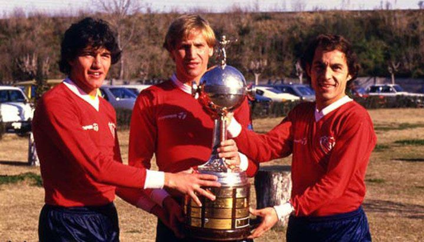
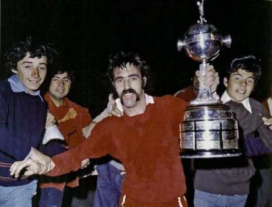
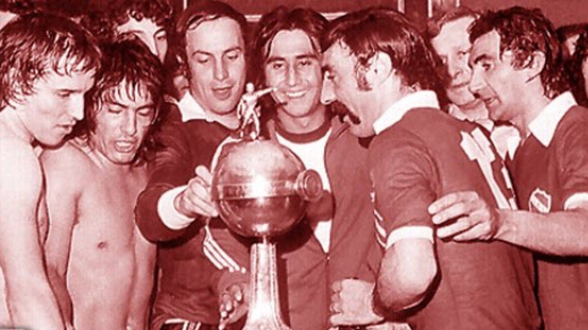
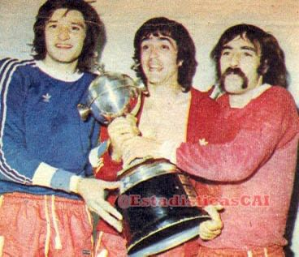
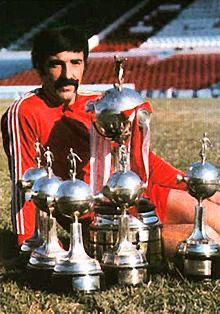
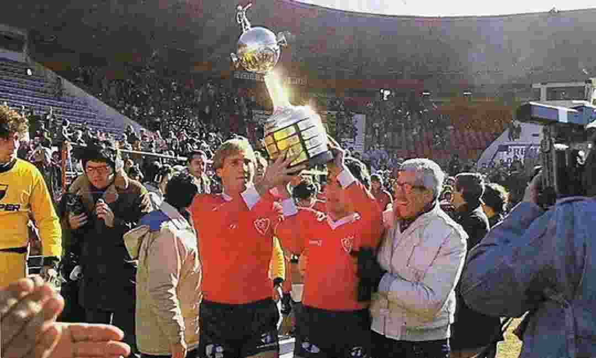
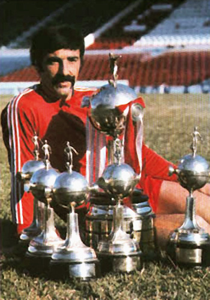
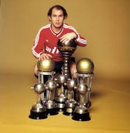
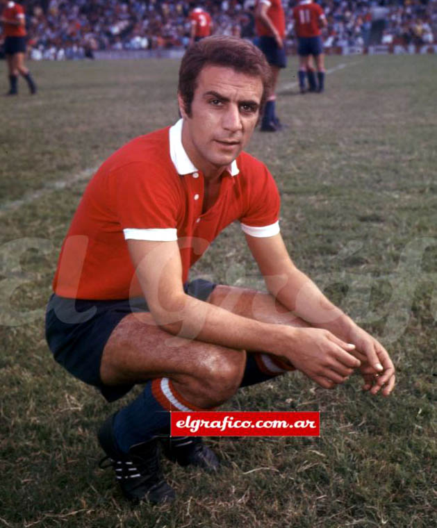

Estadio "Libertadores de America" Ricardo Enrique Bochini
Capacidad: 42.069 espectadores
Inauguración: 4 de marzo de 1928 (Re-inaugurado en 2009)
Títulos totales: 45 títulos oficiales.
Títulos nacionales: 16 títulos (16 Ligas Argentinas, 2 Copas Nacionales).
Títulos internacionales: 18 títulos (7 Copa Libertadores, 2 Intercontinentales, 2 Supercopas, entre otros).
Copa Libertadores 1964

Copa Libertadores 1965

Copa Libertadores 1972

Copa Libertadores 1973

Copa Libertadores 1974

Copa Libertadores 1975

Copa Libertadores 1984
Cantidad de hinchas: Más de 4 millones de hinchas.
Cantidad de socios: Más de 90.000 socios (2023).
Arsenio Erico

Ricardo Pavoni

Ricardo Bochini

José Pastoriza
Rival: Racing Club, en el clásico de Avellaneda.
Capacidad: 42.069 espectadores
Inauguración: 4 de marzo de 1928 (Re-inaugurado en 2009)